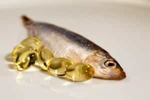
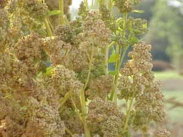
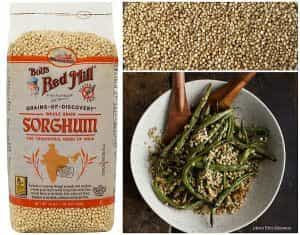

< < < Back
4 “Superfoods” And Their Effectiveness – Return Of Kings
Yes, it appears my output this week, for both Return Of Kings and my own website, is very culinary-centric indeed. But it’s always worth talking about food: After all, one does try to eat every day if he can help it.
One of the major topics discussed in this corner of the internet is that of dietary supplements: which ingredients and panaceas will serve to give you an edge over the foot-dragging normies that clog the road in your daily life.
Personally speaking, I never really cared for specifically marketed supplements, finding that just sticking to the basics—the “Don’t Eat Shit” diet, getting a good night’s sleep, not masturbating—already makes me healthier and more alert than your average slob. But of course there is a lot of talk about “superfoods” and things that can allegedly give you an edge. But how accurate are these claims?
So with that being said, here’s four foods that can be commonly purchased that are often talked about as being great “superfoods”, and the truth about whether these claims have any basis to them.
1. Fish/Omega-3 Fatty Acids
Fish is, of course, a quintessential “brain food” that many of you are likely aware of already. This is because the central nervous system (Whether it be the axons, synapses, glial cells, neurons, etc.) is made almost entirely of fatty tissues, and the fatty acids and healthful oils in fish will of course gird and enhance these neural connections.
To clarify further, the fish—and fish oil—that you are likely hearing being bandied about as “buzz words” in your day to day life are the nigh-mythical “Omega 3” fatty acids, which you’re supposed to be eating more of, and the “Omega 6” fatty acids that you should reduce your intake of. But what do these mean?
To put it very simply: Omega 3 fatty acids are what are known as “polyunsaturated fatty acids”, that have a double covalent bond in the third carbon pair from the end of the fatty acid “tail”—which is to say that the bond shares electrons between the two carbon atoms, if you will remember your chemistry classes.
Omega 6 fatty acids, in contrast, are found in vegetable fats, and while they are by themselves not particularly harmful (being similar polyunsaturated fatty acids), excess consumption of them has been linked to breast cancer in women and enzyme dysfunction. This is likely where any problem comes from, as some studies have shown the average person today eats a ratio of 15:1 Omega 6:Omega 3, and this is likely a problem that can be solved with the aforementioned “don’t eat shit” diet.
Studies have not shown that these Omega 3 fish oils prevent cancer or heart disease as is commonly claimed, but the mental health benefits and the promotion of stable nervous function would surely be enough reason to eat fish on a fairly regular basis. They also promote proper metabolic function.

2. Taurine
Taurine is a carbon based acidic compound that is indeed essential to various bodily functions, such as skeletal muscle function, cardiovascular function, and bile production. However, it occurs naturally in meat and fish, and indeed, vegans often need supplementation for it. Increasing one’s taurine intake has not been shown to have negative effects, nor has it shown any “souped up” functions in test patients either, contrary to what your “dudical” energy drink cans say because “taurine sounds like a bull, brah!” You shouldn’t be drinking energy drinks anyway; they taste like ass and philosophically embody everything wrong with the 1990s.
3. Goji berries
Goji berries, also known as “wolf berries,” are a fruit native to East Asia, part of the nightshade family that also includes the potato and the tomato, among others.
These berries are perfectly edible and are about as healthy as the average dried berry you can eat, but therein lies the key: it’s not any MORE healthy than your average occidental fruit. Sadly, many people are fooled by marketing campaigns playing up the faux-“Oriental Mysticism” angle. These marketing campaigns are, coincidentally, often run by the same Southern California burnout douchebags that push Taurine on you as well. Feel free to eat them if you want, they won’t hurt you, but I wouldn’t pay any more than you would for a box of raisins or cranberries.

4. Quinoa
I’m going to be blunt: Stop eating this. It’s nutrient composition is the same as any other comparable cereal grain such as brown rice, so it won’t hurt you. However, the increased consumption of it amongst trendy gourmands—I’m using the proper term for what idiots refer to as “foodies”—in the West has led to it increasing in price in its home region of the Andean plateau. In other words, trend-hopping Westerners are making it more difficult for people to purchase it as a subsistence crop.
I hate having to speak on this tack, as it comes off as vaguely social justice warrior-ish, but seeing as I generally wish all peoples of the world well, and feel that there are plenty of ways for people to make their plates “cooler” without leaving their home, I’ll have to ask people to stop hyping up quinoa.

If you MUST be better than the Joneses, and you want a hip and cool new cereal grain, try sorghum, which grows in your metaphorical backyard.

And as I laugh at the very concept of sorghum being cool and hip (I have some bad memories of the grain), I will reiterate that eating a sensible, clean diet is the surest pathway to health.
Read More: 11 Male “Superfoods” You Need To Eat To Burn Fat And Build Ripped Muscle